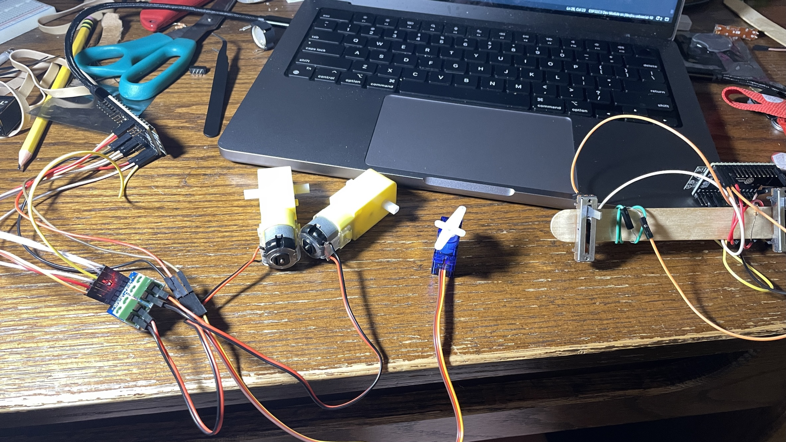
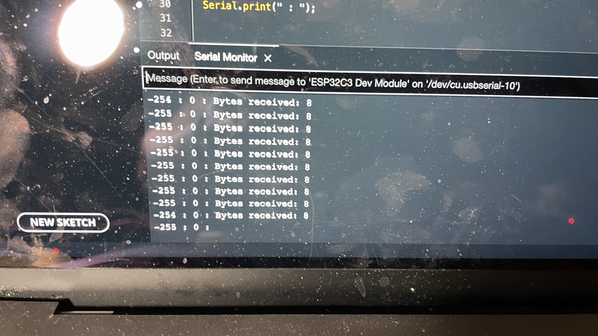

ESP32 Wifi
This week I built the electronics for a RC car and made it remote control with ESP32 NOW the esp32 microcontroller built in connectivity system ESP-Now
Electronics
This project involved 2 ESP32s, one for sending a signal and 1 for receiving it. To the receiving end I connected 1 L9110, 2 yellow DC motors (to the L9110), and a servo motor. As for the sending end I used 2 slide potentiometers. One to send the motor speed and one to send the servo position. I also built a simple popsicle stick controller that I attached the ESP32 and 2 potentiometers to.
The code
Receiving
#include
#include
#include
int motor1_1 = 2;
int motor1_2 = 3;
int motor2_1 = 5;
int motor2_2 = 6;
int turnServoPin = 8;
Servo turnServo;
typedef struct driveData {
int Drive;
int servoState;
} driveData;
driveData drive;
//callback function that will be executed when data is received
void OnDataRecv(const uint8_t * mac, const uint8_t *incomingData, int len) {
memcpy(&drive, incomingData, sizeof(driveData));
Serial.print("Bytes received: ");
Serial.println(len);
Serial.print(drive.Drive);
Serial.print(" : ");
Serial.print(drive.servoState);
Serial.print(" : ");
}
void setup() {
//Initialize Serial Monitor
Serial.begin(115200);
turnServo.attach(turnServoPin);
//Set device as a Wi-Fi Station
WiFi.mode(WIFI_STA);
//Init ESP-NOW
if (esp_now_init() != ESP_OK) {
Serial.println("Error initializing ESP-NOW");
return;
}
// Once ESPNow is successfully Init, we will register for recv CB to
// get recv packer info
esp_now_register_recv_cb(OnDataRecv);
}
void loop() {
turnServo.write(drive.servoState);
if(drive.Drive > 0) {
analogWrite(motor1_1, drive.Drive);
analogWrite(motor1_2, LOW);
analogWrite(motor2_1, drive.Drive);
analogWrite(motor2_2, LOW);
}
else {
analogWrite(motor1_2, abs(drive.Drive));
analogWrite(motor1_1, LOW);
analogWrite(motor2_2, abs(drive.Drive));
analogWrite(motor2_1, LOW);
}
}
This was the code I used to control the motors and servo. This code was based on a tutorial by Random Nerd Tutorials. From this tutorial I got some of the OnDataRecv function as well as the initializing code in setup for ESP Now the built in wireless connection system of ESP microcontrollers. To gather this data I used a C struct that contained information about the speed of the motors and the servo. I allowed the motorized to be a negative value because I wanted to be able to swap the motor direction. However, the L9110 can not read negative values so to interpret this value I used a simple if statement to check if the value was above or below zero. If it was above zero then I would drive it forward and vise versa. This code outputs the values of the motor speed and the servo state for debugging.
Sending
#include
#include
int sp1 = 3;
int sp2 = 1;
uint8_t broadcastAddress[] = {0x68, 0x67, 0x25, 0x4E, 0x7E, 0xB0};
String success;
esp_now_peer_info_t peerInfo;
typedef struct driveData {
int Drive;
int servoState;
} driveData;
driveData drive;
void setup() {
// put your setup code here, to run once:
Serial.begin(115200);
// Set device as a Wi-Fi Station
WiFi.mode(WIFI_STA);
// Init ESP-NOW
if (esp_now_init() != ESP_OK) {
Serial.println("Error initializing ESP-NOW");
return;
}
// Register for a callback function that will be called when data is received
esp_now_register_send_cb(OnDataSent);
// Register peer
peerInfo.channel = 0;
peerInfo.encrypt = false;
memcpy(peerInfo.peer_addr, broadcastAddress, 6);
if (esp_now_add_peer(&peerInfo) != ESP_OK){
Serial.println("Failed to add peer");
return;
}
}
void loop() {
int sp1Current = analogRead(sp1);
int sp2Current = analogRead(sp2);
sp1Current= map(sp1Current, 0, 2300, -255, 255);
sp2Current= map(sp2Current, 0, 2300, 0, 180);
drive.Drive=sp1Current;
drive.servoState=sp2Current;
esp_err_t result = esp_now_send(0, (uint8_t *) &drive, sizeof(driveData));
if (result == ESP_OK) {
Serial.println("Sent with success");
}
else {
Serial.println("Error sending the data");
}
delay(50);
}
void OnDataSent(const uint8_t *mac_addr, esp_now_send_status_t status) {
char macStr[18];
Serial.print("Packet to: ");
// Copies the sender mac address to a string
snprintf(macStr, sizeof(macStr), "%02x:%02x:%02x:%02x:%02x:%02x",
mac_addr[0], mac_addr[1], mac_addr[2], mac_addr[3], mac_addr[4], mac_addr[5]);
Serial.print(macStr);
Serial.print(" send status:\t");
Serial.println(status == ESP_NOW_SEND_SUCCESS ? "Delivery Success" : "Delivery Fail");
}
This is the code I used to transmit the data to the receiving ESP32. This code was based on a tutorial by Random Nerd Tutorials. From this tutorial I got the onDataSent function as well as the code for connecting the 2nd ESP to this one. In this code to send the proper information to the other ESP32 I used a c Struct. This made it very easy to send the correct information and access it. The only other thing this code does is reads the state of the slide potentiometers and translate those into values that are usable by the Servo and Motors. To connect the 2 ESP32's you need the receiving esp's mac address. To do this you can run this program on the receiving microcontroller.
#ifdef ESP32
#include
#else
#include
#endif
void setup(){
Serial.begin(115200);
Serial.println();
Serial.print("ESP Board MAC Address: ");
Serial.println(WiFi.macAddress());
}
void loop(){
Serial.println();
Serial.print("ESP Board MAC Address: ");
Serial.println(WiFi.macAddress());
delay(1000);
}
This code will print out the MAC address of the current ESP32. You can then convert this address into bit format by adding a 0x to the beginning of each number/letter and putting commas between the numbers. it should look something like this.
0x68, 0x67, 0x25, 0x4E, 0x7E, 0xB0
You can then input this into the broadcastAddress variable and it should allow your ESP's to connect.
Final Build
This project is a good prototype for what could be on the inside of a simple RC car. I hope to take this project to that level in the future.